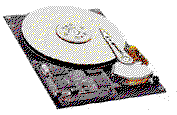
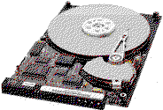

Previous
Next
TOC
JTS Corporation
166 Baypointe Parkway, San Jose, CA 95134
Phone: 408-468-1800, Fax: 408-468-1619
Email: custserv@jtscorp.com (JTS Customer Service)
Email: info@jtscorp.com
Email: tech@jtscorp.com (JTS Technical Support)
JTS Corporation Technical Support
Phone: 408-468-1800, or toll free 888-587-0945
Fax: 408-468-1622
From UK: 011 44 1753 533344 or (fax) 011 44 1753 822914)
From Taiwan: 011 886 271 83730 or (fax) 011 886 254 53943)
BBS: 408-435-1741
Die Produkte von der JTS Corporation
Nordic 3.0 Zoll
Champion and Champ 3.5 Zoll
Notebook Disk Drives
Desktop Disk Drives


Ultra-thin, high capacity 3-inch disk drives for mobile computing and
notebook computers. The JTS Nordic Family of 3-inch hard disk drives
introduces an exciting new concept in data storage. Employing 3-inch
disks, the low profile Nordic sets a new storage packaging standard
for use in portable applications. The robust and durable Nordic drive
series offers an ideal low cost solution for high-capacity, portable
data storage applications.
Low profile, low cost, high capacity 3.5-inch disk drives for desktop
applications. The JTS Family of 3.5-inch hard disk drives provides
mainstream storage for desktop applications. The rugged and reliable
Champion and Champ drives, with their low-profile and 3.5-inch form
factor, satisfy a broad spectrum of demanding data storage applica-
tions.
Nolan Bushnell, der Urvater und Gründer von Atari
weiterblättern